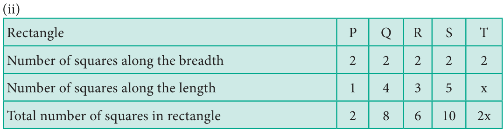
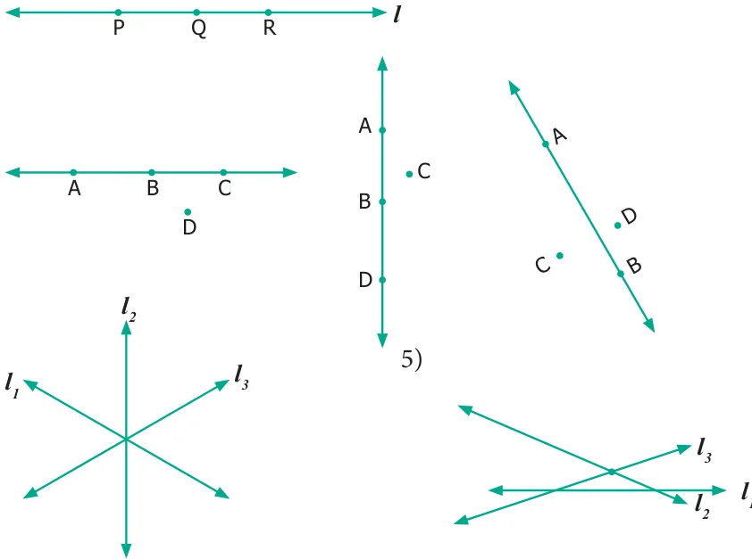
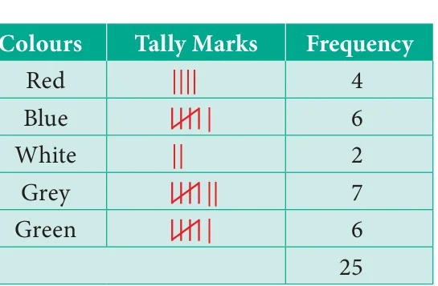
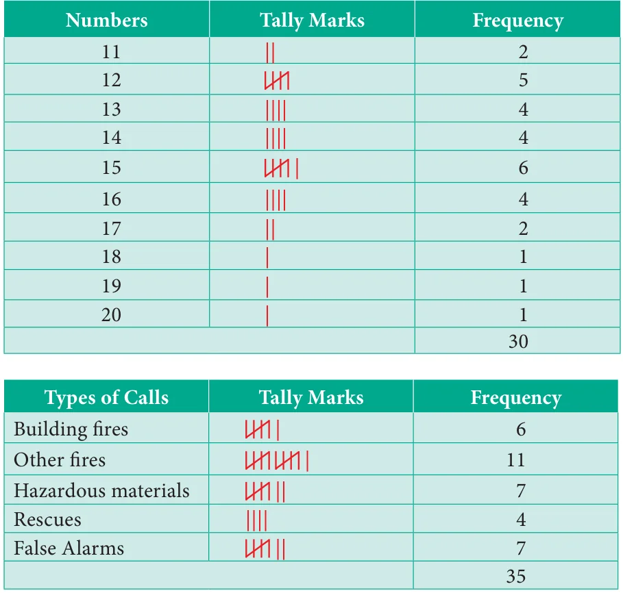
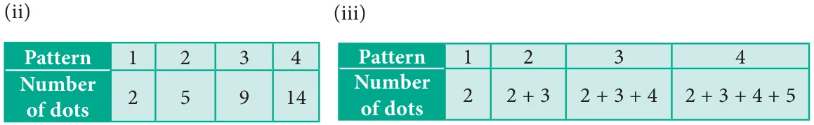

<!DOCTYPE html>
<html lang="en">
<head>
<meta charset="UTF-8">
<meta name="viewport" content="width=device-width,initial-scale=1">
<title>Answers — Appendix</title>
<meta name="description" content="Class 6 Mathematics · Term 1 · Appendix · Answers">
<link rel="icon" href="data:image/svg+xml,<svg xmlns='http://www.w3.org/2000/svg' viewBox='0 0 100 100'><text y='.9em' font-size='90'>📘</text></svg>">
<link rel="stylesheet" href="../../../assets/book.css">
<link rel="stylesheet" href="https://cdn.jsdelivr.net/npm/katex@0.16.11/dist/katex.min.css" crossorigin="anonymous">
</head>
<body>
<header class="topbar">
<div class="topbar-in">
  <div class="crumb">
    <span class="c1"><a href="../../../index.html">Library</a> · <a href="../../index.html">Class 6 Mathematics · Term 1</a></span>
    <span class="c2">Appendix · Answers</span>
  </div>
  <a class="tb-btn" data-nav="prev" href="../../90-appendix/00-front-matter/index.html" title="Front Matter">←</a>
  <details class="drawer"><summary class="tb-btn" title="Sections in this chapter">☰</summary>
<div class="drawer-panel"><div class="dh">Appendix</div><a href="../00-front-matter/index.html">Front Matter</a><a href="../answers/index.html" aria-current="page">Answers</a><a href="../mathematical-terms/index.html">Mathematical Terms</a></div></details>
  <a class="tb-btn" data-nav="next" href="../../90-appendix/mathematical-terms/index.html" title="Mathematical Terms">→</a>
  <button class="tb-btn" data-theme-toggle title="Toggle light / dark" aria-label="Toggle light or dark theme">◐</button>
</div>
<div class="progress"><span style="width:98.6%"></span></div>
</header>
<main class="wrap">
<div class="sec-head">
  <p class="eyebrow"><a href="../index.html">Appendix · Appendix</a></p>
  <h1>Answers</h1>
  <p class="sec-meta">17 figures</p>
</div>
<article class="prose">
<h2 id="s-numbers">NUMBERS</h2>
<h3 class="callout-h" id="s-exercise-1-1">Exercise 1.1</h3>
<ul class="qlist">
<li><span class="mk">1)</span><span class="lt">(i) 10,00,000 (ii) 9,99,99,999 (iii) Five Thousand (iv) 7000000+600000+70000+900+5</span></li>
<li><span class="mk">2)</span><span class="lt">(i) False (ii) False (iii) True (iv) False</span></li>
<li><span class="mk">3)</span><span class="lt">10 4) (i) 70,00,000 (ii) 7,000,000</span></li>
<li><span class="mk">5)</span><span class="lt">(i) 347,056 (ii) 7,345,671 (iii) 634,567,105 (iv) 1,234,567,890</span></li>
<li><span class="mk">6)</span><span class="lt">Indian System : 9,99,999 (Nine Lakh Ninety Nine Thousand Nine Hundred Ninety Nine)</span></li>
</ul>
<p>International System : 999,999 (Nine Hundred Ninety Nine Thousand, Nine Hundred Nintey Nine)</p>
<ul class="qlist">
<li><span class="mk">7)</span><span class="lt">(i) Seventy five lakh thirty two thousand one hundred five</span></li>
<li><span class="mk">(ii)</span><span class="lt">Nine crore seventy five lakh sixty three thousand four hundred fifty three</span></li>
<li><span class="mk">8)</span><span class="lt">(i) Three hundred forty five thousand six hundred seventy eight</span></li>
<li><span class="mk">(ii)</span><span class="lt">Eight million three hundred forty three thousand seven hundred ten</span></li>
<li><span class="mk">iii)</span><span class="lt">One hundred three million four hundred fifty six thousand seven hundred eighty nine</span></li>
<li><span class="mk">9)</span><span class="lt">(i) 2,30,51,980 (ii) 66,345,027 (iii) 789,213,456 10) 26,345</span></li>
<li><span class="mk">11)</span><span class="lt">1,000,000 (One million)</span></li>
</ul>
<h3 id="s-objective-type-questions">Objective Type Questions</h3>
<ul class="qlist">
<li><span class="mk">12)</span><span class="lt">(b) 10000001 13) (c) 2 14) (a) 100 Crore</span></li>
<li><span class="mk">15)</span><span class="lt">(d) \(6 \times 100000 + 7 \times 10000 +0 \times 1000 +9 \times 100 +0 \times 10 +5 \times 1\)</span></li>
</ul>
<h3 class="callout-h" id="s-exercise-1-2">Exercise 1.2</h3>
<ul class="qlist">
<li><span class="mk">1)</span><span class="lt">(i) 48792&lt; 48972 (ii) 1248654&gt; 1246854 (iii) \(658794 = 658794\)</span></li>
<li><span class="mk">2)</span><span class="lt">(i) False (ii) False (iii) True</span></li>
<li><span class="mk">3)</span><span class="lt">The greatest number is 1386787215</span></li>
</ul>
<p>The smallest number is 86720560</p>
<ul class="qlist">
<li><span class="mk">4)</span><span class="lt">\(128435 &gt; 25840 &gt; 21354 &gt; 10835 &gt; 6348\)</span></li>
<li><span class="mk">5)</span><span class="lt">76095321, 86593214 (Similarly, we can write many numbers)</span></li>
<li><span class="mk">6)</span><span class="lt">479, 497, 749, 794, 947, 974 7) 4698</span></li>
<li><span class="mk">8)</span><span class="lt">The smallest Postal Index Number is 631036</span></li>
</ul>
<p>The largest Postal Index Number is 631630</p>
<ul class="qlist">
<li><span class="mk">9)</span><span class="lt">(i) Aanaimudi (ii) Aanaimudi &gt; Dottabetta &gt; Velliangiri &gt; Mahendragiri</span></li>
<li><span class="mk">(iii)</span><span class="lt">1048 m</span></li>
</ul>
<h3 id="s-objective-type-questions">Objective Type Questions</h3>
<ul class="qlist">
<li><span class="mk">10)</span><span class="lt">(c) 134205, 134208, 154203 11) (a) 1489000 and 1492540 12) (d) 26</span></li>
</ul>
<h3 class="callout-h" id="s-exercise-1-3">Exercise 1.3</h3>
<ul class="qlist">
<li><span class="mk">1)</span><span class="lt">(i) 360 (ii) 150 (iii) 1 2) (i) False (ii) True (iii) False 3) 11910</span></li>
<li><span class="mk">4)</span><span class="lt">2,15,750 5) 39,000 bicycles 6) ₹ 2500 7) (i) 9 (ii) 11 (ii) 107</span></li>
<li><span class="mk">8)</span><span class="lt">(d) 1 9) (b) 12 10) (c) \(\times\)</span></li>
</ul>
<h3 class="callout-h" id="s-exercise-1-4">Exercise 1.4</h3>
<ul class="qlist">
<li><span class="mk">1)</span><span class="lt">(i) 800 (ii) 1000 (iii) 90,000 2) (i) False (ii) True (iii) False</span></li>
<li><span class="mk">3)</span><span class="lt">(i) 4100 (ii) 45,000 (iii) 90,000 (iv) 51,00,000 (v) 30,00,00,000</span></li>
<li><span class="mk">4)</span><span class="lt">1,90,000 5) (i) 12,300 (ii) 18,99,600 6) 3,37,000</span></li>
</ul>
<h3 id="s-objective-type-questions">Objective Type Questions</h3>
<ul class="qlist">
<li><span class="mk">7)</span><span class="lt">(b) 10855 8) (c) 76800 9) (a) 9800000 10) (b) 165000</span></li>
</ul>
<h3 class="callout-h" id="s-exercise-1-5">Exercise 1.5</h3>
<ul class="qlist">
<li><span class="mk">1)</span><span class="lt">(i) 1 (ii) 34 (iii) 0 (iv) Zero (v) one</span></li>
<li><span class="mk">2)</span><span class="lt">(i) False (ii) False (iii) True (iv) True (v) True</span></li>
<li><span class="mk">3)</span><span class="lt">(i) Commutativity for Addition (ii) Associativity for Multiplication</span></li>
<li><span class="mk">(iii)</span><span class="lt">Zero is Additive Identity (iv) One is Multiplicative Identity</span></li>
<li><span class="mk">(v)</span><span class="lt">Distributivity of Multiplication over Addition</span></li>
<li><span class="mk">4)</span><span class="lt">(i) 5100 (ii) 3,00,000 (iii) 13,200 (iv) 334</span></li>
</ul>
<h3 id="s-objective-type-questions">Objective Type Questions</h3>
<ul class="qlist">
<li><span class="mk">5)</span><span class="lt">(b) 0 6) (d) 59 7) (a) an even number</span></li>
<li><span class="mk">8)</span><span class="lt">(b) 0 9) (c) 2+0 10) (c) \(4237+ 5498 \times 3439 = (4237 + 5498) \times 3439\)</span></li>
</ul>
<h3 class="callout-h" id="s-exercise-1-6">Exercise 1.6</h3>
<ul class="qlist">
<li><span class="mk">1)</span><span class="lt">87543</span></li>
<li><span class="mk">2)</span><span class="lt">Ascending Order : \(6,85,48,437 &lt; 7,21,47,030 &lt; 7,26,26,809 &lt; 9,12,76,115\)</span></li>
</ul>
<p>Descending Order: \(9,12,76,115 &gt;7,26,26,809 &gt;7,21,47,030 &gt; 6,85,48,437\)</p>
<ul class="qlist">
<li><span class="mk">3)</span><span class="lt">(i) 1706 tigers in 2011 (ii) 2100 (iii) 520 tigers increased from 2011 to 2014</span></li>
<li><span class="mk">4)</span><span class="lt">among 6 friends, each of them get 37 apples. 3 apples left over</span></li>
<li><span class="mk">5)</span><span class="lt">\(515 + 1 = 516\) trays required</span></li>
<li><span class="mk">6)</span><span class="lt">(i) Indian System:Two crore fifty nine lakh forty one thousand nine hundred</span></li>
</ul>
<p>International System : Twenty five million nine hundred forty one thousand nine hundred</p>
<ul class="qlist">
<li><span class="mk">(ii)</span><span class="lt">5,50,500 (iii) Eighty six crore forty lakh seven hundred thirty</span></li>
<li><span class="mk">(iv)</span><span class="lt">Ninteen million eight hundred eighty eight thousand eight hundred</span></li>
<li><span class="mk">(v)</span><span class="lt">Indian System : \(60,53,100 -\) Sixty lakh fifty three thousand one hundred</span></li>
</ul>
<p>International System : \(6,053,100 -\) Six million fifty three thousand one hundred</p>
<ul class="qlist">
<li><span class="mk">7)</span><span class="lt">One of the answers is 43781. Many answers are possible</span></li>
<li><span class="mk">8)</span><span class="lt">(i) 85 rows are required to fill 7650 chairs (ii) The remaining chairs are 39</span></li>
<li><span class="mk">9)</span><span class="lt">Yes, both are same (30,00,000) 10) Relevant answers are yours</span></li>
</ul>
<h2 id="s-algebra">ALGEBRA</h2>
<h3 class="callout-h" id="s-exercise-2-1">Exercise 2.1</h3>
<ul class="qlist">
<li><span class="mk">1)</span><span class="lt">(i) Variables (ii) \(f - 5\) (iii) \(\frac{s}{5}\) (iv) \(n - 7\) (v) 17</span></li>
<li><span class="mk">2)</span><span class="lt">(i) False (ii) True (iii) False (iv) True (v) True</span></li>
</ul>
<p>3)</p>
<figure class="fig wide"></figure>
<ul class="qlist">
<li><span class="mk">4)</span><span class="lt">Arivazhagan’s age is ‘n-30’ 5) (i) \(u + 2\) (ii) \(u - 2\)</span></li>
<li><span class="mk">6)</span><span class="lt">(i) \(t + 100\) (ii) 4q (iii) \(9y - 4\)</span></li>
<li><span class="mk">7)</span><span class="lt">(i) x divided by 3 (ii) 11 added to 10 times x (iii) product of 70 and s</span></li>
<li><span class="mk">8)</span><span class="lt">Vetri's answer is correct 9) (i) 299; 301 (ii)18</span></li>
</ul>
<p>10)</p>
<figure class="fig table-fig wide"></figure>
<p>The value of ‘k’ is 15.</p>
<h3 id="s-objective-type-questions">Objective Type Questions</h3>
<ul class="qlist">
<li><span class="mk">11)</span><span class="lt">c) can take different values 12) d) 7w 13) d) 22</span></li>
<li><span class="mk">14)</span><span class="lt">b) \(y = 6 15)\) a) \(n - 6 = 8\)</span></li>
</ul>
<h3 class="callout-h" id="s-exercise-2-2">Exercise 2.2</h3>
<ul class="qlist">
<li><span class="mk">1)</span><span class="lt">8; 77; 666; 5555; 44444; 333333 2) (i) 4s (ii) 3s</span></li>
</ul>
<p>3)</p>
<figure class="fig table-fig wide"></figure>
<ul class="qlist">
<li><span class="mk">4)</span><span class="lt">\(k = 3\); \(m = 1\); \(n = 10\); \(a = 9\); \(b = 6\); \(c = 4\); \(x = 4\); \(y = 9\).</span></li>
<li><span class="mk">5)</span><span class="lt">19</span></li>
<li><span class="mk">6)</span><span class="lt">(i) P=2; Q=8; R=6; S=10</span></li>
</ul>
<figure class="fig table-fig wide"></figure>
<p>7)</p>
<figure class="fig table-fig"></figure>
<h2 id="s-ratio-and-proportion">RATIO AND PROPORTION</h2>
<h3 class="callout-h" id="s-exercise-3-1">Exercise 3.1</h3>
<ul class="qlist">
<li><span class="mk">1)</span><span class="lt">(i) 3 : 5 (ii) 3 : 2 (iii)25 : 2 (iv)3 : 8 2) (i) True (ii) False</span></li>
<li><span class="mk">3)</span><span class="lt">(i) 3 : 4 (ii) 4 : 3 (iii) 7 : 15 (iv) 4 : 9 (v) 3 : 4 4) 5 : 3 5) 1 : 3</span></li>
<li><span class="mk">6)</span><span class="lt">(i) 3 : 5 (ii)2 : 5 (iii)3 : 2 7) (d) 5 : 1 8) (c) 20 : 1 9) (d) 10 : 7</span></li>
<li><span class="mk">10.</span><span class="lt">(b) 3 : 4 11. (c) 5 : 1</span></li>
</ul>
<h3 class="callout-h" id="s-exercise-3-2">Exercise 3.2</h3>
<ul class="qlist">
<li><span class="mk">1)</span><span class="lt">(i) 15 (ii) 8 (iii) 12 2) (i) 36 inches, 6 Feet (ii) 14 days, 9 weeks</span></li>
<li><span class="mk">3)</span><span class="lt">(i) False (ii) True 4) (i) 6 : 4, 9 : 6 (ii) 2 : 12, 3 : 18 (iii) 10 : 8, 15 : 12</span></li>
<li><span class="mk">5)</span><span class="lt">(i) 4 : 5 is larger than 8 : 15 (ii) 7 : 8 is larger 3 : 4 (iii) 2 : 1 is larger than 1 : 2</span></li>
<li><span class="mk">6)</span><span class="lt">(i) 12, 8 (ii) 12, 15 (iii) 12, 28 7) (i) Rs.2400 (ii) Rs.1600</span></li>
<li><span class="mk">8)</span><span class="lt">21 cm, 42 cm 9) (a) 6 10) (d) 12 : 21 11) (d) 20/28 12) (c) Rs.1000</span></li>
</ul>
<h3 class="callout-h" id="s-exercise-3-3">Exercise 3.3</h3>
<ul class="qlist">
<li><span class="mk">1)</span><span class="lt">(i) 12 (ii) 9 (iii) 4; 12 (iv) 24; 2 2) (i) False (ii) False (iii) True (iv) False</span></li>
<li><span class="mk">3)</span><span class="lt">(i) Rs.30 (ii) 25 days 4) Yes, 12:24, 18:36</span></li>
<li><span class="mk">5)</span><span class="lt">(i) Yes, Extreme values \(- 78\), 20; Inbetween values \(- 130\), 12</span></li>
<li><span class="mk">(ii)</span><span class="lt">No, Extreme values \(- 400\), 625; Inbetween values \(- 50\), 25</span></li>
<li><span class="mk">6)</span><span class="lt">Yes 7) 80 Pages 8) 2 km 9) 44 points</span></li>
<li><span class="mk">10 )</span><span class="lt">Asif’s run rate is better 11) My friend’s rate of purchase is better than me.</span></li>
</ul>
<h3 id="s-objective-type-questions">Objective Type Questions</h3>
<ul class="qlist">
<li><span class="mk">12)</span><span class="lt">(c) 2 : 5 , 10 : 25 13) (d) 8 14) (c) 35 15) (b) 270 16) (c) 6 km</span></li>
</ul>
<h3 class="callout-h" id="s-exercise-3-4">Exercise 3.4</h3>
<ul class="qlist">
<li><span class="mk">1)</span><span class="lt">(i) 1 : 4 (ii) 4 : 5 (iii) 1 : 5 (iv) Ratio of elephant to cheetah is least</span></li>
<li><span class="mk">2)</span><span class="lt">60 teachers and 6 administrators 3) (i) 2 : 1 (ii) 1 : 3 (iii) 12 ratios</span></li>
<li><span class="mk">4)</span><span class="lt">A : \(B = 2\) : 1, B : \(C = 2\) : 1; They are in proportion.</span></li>
<li><span class="mk">5)</span><span class="lt">(a) 1 cup (b) 8 cups</span></li>
</ul>
<ul class="qlist">
<li><span class="mk">(c)</span><span class="lt">Ragi flour, Raw rice and water are in one unit, Sesame oil and salt are in different</span></li>
</ul>
<p>units. these different units cannot be compared and cannot be expressed as a ratio.</p>
<ul class="qlist">
<li><span class="mk">6)</span><span class="lt">2 : 1 7) There are four different ways. 8) Team B has better record</span></li>
<li><span class="mk">9)</span><span class="lt">The standard 8 is the least ratio</span></li>
<li><span class="mk">10)</span><span class="lt">The six different answers are : 1 and 90; 2 and 45; 30 and 3; 5 and 18;</span></li>
</ul>
<p>6 and 15, 9 and 10.</p>
<ul class="qlist">
<li><span class="mk">11)</span><span class="lt">29 : 44 12) (a) Black balls (b) 96 balls (c) 32 balls, 24 balls</span></li>
</ul>
<h2 id="s-geometry">GEOMETRY</h2>
<h3 class="callout-h" id="s-exercise-4-1">Exercise 4.1</h3>
<ul class="qlist">
<li><span class="mk">1)</span><span class="lt">i) AB ii) BA iii) One 2) 10, PQ, PA, PB, PC, AB, BC, CQ, AQ, BQ, AC</span></li>
<li><span class="mk">3)</span><span class="lt">\(XY =2.4\) cm, \(AB = 3.4cm\), \(EF = 4\) cm, \(PQ = 3cm\).</span></li>
<li><span class="mk">5)</span><span class="lt">(i)</span></li>
<li><span class="mk">(ii)</span><span class="lt">AB and CD, AB and EF,AB and IJ, GH and IJ, AB and GH (iii) P, Q and R</span></li>
<li><span class="mk">6)</span><span class="lt">(i) l_{3} and l_{4} , l_{4} and l_{5} , l_{3} and l_{5}</span></li>
<li><span class="mk">(ii)</span><span class="lt">l_{1} and l_{2}, l_{1} and l_{3} , l_{1} and l_{4} , l_{1} and l_{5}, l_{2} and l_{3} , l_{2} and l_{4} , l_{2} and l_{5}</span></li>
<li><span class="mk">(iii)</span><span class="lt">l_{1} and l_{2} (iv) Q (v) U</span></li>
</ul>
<h3 id="s-objective-type-questions">Objective Type Questions</h3>
<ul class="qlist">
<li><span class="mk">7)</span><span class="lt">c) 3 8) d) AB</span></li>
</ul>
<h3 class="callout-h" id="s-exercise-4-2">Exercise 4.2</h3>
<ul class="qlist">
<li><span class="mk">2)</span><span class="lt">i) D,DEand DF ii) D,DE, DC</span></li>
<li><span class="mk">3)</span><span class="lt">i), iii), v) are right angles 4) i), ii) and iii) are acute angles</span></li>
<li><span class="mk">5)</span><span class="lt">i), iii) are obtuse angles</span></li>
<li><span class="mk">6)</span><span class="lt">i) \(\angle LMN\), \(\angle NML\), \(\angle M\) ii) \(\angle PQR\), \(\angle RQP\), \(\angle Q\)</span></li>
<li><span class="mk">iii)</span><span class="lt">\(\angle MNO\), \(\angle ONM\), \(\angle N\) iv) \(\angle TAS\), \(\angle SAT\), \(\angle A\)</span></li>
<li><span class="mk">7)</span><span class="lt">i) True ii) False iii) False iv) True</span></li>
<li><span class="mk">9)</span><span class="lt">i) Obtuse angle ii) Zero angle iii) Straight angle iv) Acute angle v) Right angle</span></li>
<li><span class="mk">10)</span><span class="lt">i) 60˚ ii) 64˚ iii) 5˚ iv) 90˚ v) 0˚</span></li>
<li><span class="mk">11)</span><span class="lt">i) 110˚ ii) 145˚ iii) 15˚ iv) 90˚ v) 180˚</span></li>
<li><span class="mk">12)</span><span class="lt">i) 155˚ ii) 60˚ iii) 44˚ iv) 113˚ 13) b) \(\angle ZXY 14)\) b) 45˚</span></li>
</ul>
<h3 class="callout-h" id="s-exercise-4-3">Exercise 4.3</h3>
<ul class="qlist">
<li><span class="mk">1)</span><span class="lt">i) Collinear ii) Non-Collinear iii) Non-Collinear iv) O</span></li>
</ul>
<p>2)</p>
<figure class="fig"></figure>
<p>3)</p>
<p>4)</p>
<aside class="sidenote"><p>1 ,</p></aside>
<h3 id="s-objective-type-questions">Objective Type Questions</h3>
<ul class="qlist">
<li><span class="mk">6)</span><span class="lt">b) A, F, C 7) d) A, D, C 8) b) F</span></li>
</ul>
<h3 class="callout-h" id="s-exercise-4-4">Exercise 4.4</h3>
<ul class="qlist">
<li><span class="mk">1)</span><span class="lt">i) Parallel lines ii) Parallel and Perpendicular lines</span></li>
<li><span class="mk">iii)</span><span class="lt">Intersecting lines</span></li>
<li><span class="mk">2)</span><span class="lt">Parallel lines Intersecting Lines</span></li>
</ul>
<p>AB and DC</p>
<div class="mathblock"><p>AD and \(BC \frac{AB\), AE, AD}{DA, DH, DC}</p></div>
<p>DC and HG</p>
<div class="mathblock"><p>AD and \(EH \frac{CB\), CG, CD}{HD, HG, HE}</p></div>
<p>AE and DH EA, EH...</p>
<p>DH and CG</p>
<ul class="qlist">
<li><span class="mk">3)</span><span class="lt">i) \(\angle 1 = \angle CBD\) or \(\angle DBC\) ii) \(\angle 2 = \angle DBE\) or \(\angle EBD\)</span></li>
<li><span class="mk">iii)</span><span class="lt">\(\angle 3 = \angle ABE\) or \(\angle EBA\) iv) \(\angle 1+ \angle 2 = \angle CBE\) or \(\angle EBC\)</span></li>
<li><span class="mk">v)</span><span class="lt">\(\angle 2 + \angle 3 = \angle ABD\) or \(\angle DBA\) vi) \(\angle 1 + \angle 2 + \angle 3 = \angle ABC\) or \(\angle CBA\)</span></li>
<li><span class="mk">4)</span><span class="lt">i) right angle ii) acute angle iii) straight angle iv) obtuse angle</span></li>
<li><span class="mk">5)</span><span class="lt">(i) and (iv) are complementary angles  (ii) and (iii) are non-complementary angles</span></li>
<li><span class="mk">6)</span><span class="lt">ii) and iv) are supplementary i) and iii) are not supplementary</span></li>
<li><span class="mk">7)</span><span class="lt">i) \(\angle FAE\); \(\angle EAD\)</span></li>
<li><span class="mk">ii)</span><span class="lt">\(\angle FAD\); \(\angle DAC \angle BAC\); \(\angle CAE \angle DAB\); \(\angle DAE \angle FAB\); \(\angle BAC \angle FAB\); \(\angle FAE\)</span></li>
<li><span class="mk">8)</span><span class="lt">i) Legs of the table, railway track, edges of the scale</span></li>
<li><span class="mk">ii)</span><span class="lt">Adjacent sides of a Board, Cross bars of windows, Adjacent sides of the textbook</span></li>
<li><span class="mk">iii)</span><span class="lt">Cross bars of windows, Ladder, blades of a scissor.</span></li>
<li><span class="mk">9)</span><span class="lt">60˚ is twice its complement. 10) 72˚ 11) The two angles are 80˚ and 100˚</span></li>
<li><span class="mk">12)</span><span class="lt">Two angles are 70˚ and 20˚. 13) The angles are 100˚ and 80˚.</span></li>
</ul>
<h2 id="s-statistics">STATISTICS</h2>
<h3 class="callout-h" id="s-exercise-5-1">Exercise 5.1</h3>
<ul class="qlist">
<li><span class="mk">1)</span><span class="lt">(i) Data (ii) List of absentees in a class</span></li>
<li><span class="mk">(iii)</span><span class="lt">Cricket scores gathered from a website |||</span></li>
</ul>
<figure class="fig table-fig"></figure>
<ul class="qlist">
<li><span class="mk">2)</span><span class="lt">3)</span></li>
</ul>
<figure class="fig"></figure>
<p>4)</p>
<figure class="fig table-fig wide"></figure>
<p>5)</p>
<p>Other fires Rescues</p>
<ul class="qlist">
<li><span class="mk">6)</span><span class="lt">|| 7) (c) 9</span></li>
</ul>
<h3 class="callout-h" id="s-exercise-5-2">Exercise 5.2</h3>
<figure class="fig"></figure>
<ul class="qlist">
<li><span class="mk">1)</span><span class="lt">i) 150 iii) Pictograph</span></li>
<li><span class="mk">4)</span><span class="lt">i) kabaddi ii) 110 iii) Kho-Kho and Hockey iv) 0 v) Basketball</span></li>
<li><span class="mk">5)</span><span class="lt">(c) Scaling 6) (b) Pictogram</span></li>
</ul>
<h3 class="callout-h" id="s-exercise-5-3">Exercise 5.3</h3>
<ul class="qlist">
<li><span class="mk">1)</span><span class="lt">i) 10 ii) Mathematics iii) Language iv) 65% v) English</span></li>
<li><span class="mk">vi)</span><span class="lt">Mathematics; English</span></li>
<li><span class="mk">5)</span><span class="lt">(d) Both horizontal bars or vertical bars. 6) (b) are the same</span></li>
</ul>
<h3 class="callout-h" id="s-exercise-5-4">Exercise 5.4</h3>
<figure class="fig table-fig wide"></figure>
<ul class="qlist">
<li><span class="mk">2)</span><span class="lt">i) 5 : 4 ii) 5 : 19 iii) ₹ 300 iv) ₹ 2400 v) true</span></li>
<li><span class="mk">4)</span><span class="lt">ii) 14 days iii) 24 days iv) 5 : 3</span></li>
<li><span class="mk">7)</span><span class="lt">i) Novelists ii) Scientists iii) Sportspersons iv) 25 v) 160</span></li>
</ul>
<h2 id="s-information-processing">INFORMATION PROCESSING</h2>
<h3 class="callout-h" id="s-exercise-6-1">Exercise 6.1</h3>
<ul class="qlist">
<li><span class="mk">1)</span><span class="lt">5 combinations are possible, Black - White Black - Blue Black - Red</span></li>
</ul>
<p>Blue - white Blue - Red</p>
<ul class="qlist">
<li><span class="mk">2)</span><span class="lt">6 possibilities, \(R - B - R - B R - R - B - B B - R - R - B\)</span></li>
</ul>
<p>\(B - R - B - R B - B - R - R R - B - B - R\)</p>
<p>(3) One of the answers is, (4) (i) Yes</p>
<figure class="fig"></figure>
<ul class="qlist">
<li><span class="mk">(ii)</span><span class="lt">5</span></li>
<li><span class="mk">(iii)</span><span class="lt">17, 19, 20, 21, 23</span></li>
<li><span class="mk">5)</span><span class="lt">6)</span></li>
</ul>
<figure class="fig"></figure>
<figure class="fig"></figure>
<p>(7) There are many other possible ways. (8) (i) 12 triangles</p>
<figure class="fig"></figure>
<ul class="qlist">
<li><span class="mk">(ii)</span><span class="lt">16 triangles</span></li>
<li><span class="mk">(iii)</span><span class="lt">32 triangles</span></li>
<li><span class="mk">(iv)</span><span class="lt">35 triangles</span></li>
</ul>
<aside class="sidenote"><p>(9) (i) 55</p><p>100</p></aside>
<p>(10) (i)</p>
<figure class="fig"></figure>
<figure class="fig table-fig wide"></figure>
<ul class="qlist">
<li><span class="mk">(iv)</span><span class="lt">350</span></li>
</ul>
<p>(11) (i) 20 squares (ii) 10 squares</p>
<p>(12) 7 circles (13) (i) 10 (ii) 12</p>
</article>
<nav class="pager"><a class="" data-nav="prev" href="../../90-appendix/00-front-matter/index.html"><span class="dir">← Previous</span><span class="t">Front Matter</span><span class="ch">Appendix</span></a><a class="nx" data-nav="next" href="../../90-appendix/mathematical-terms/index.html"><span class="dir">Next →</span><span class="t">Mathematical Terms</span><span class="ch">Appendix</span></a></nav>
</main><footer class="site">Generated from the source textbook PDFs · text, figures and exercises belong to their respective publishers.</footer><script defer src="https://cdn.jsdelivr.net/npm/katex@0.16.11/dist/katex.min.js" crossorigin="anonymous"></script>
<script defer src="https://cdn.jsdelivr.net/npm/katex@0.16.11/dist/contrib/auto-render.min.js" crossorigin="anonymous"
  onload="renderMathInElement(document.body,{delimiters:[
    {left:'\\(',right:'\\)',display:false},
    {left:'$$',right:'$$',display:true},
    {left:'\\[',right:'\\]',display:true}],throwOnError:false,ignoredTags:['script','noscript','style','textarea','pre','code']})"></script>
<script src="../../../assets/book.js"></script>
</body>
</html>
